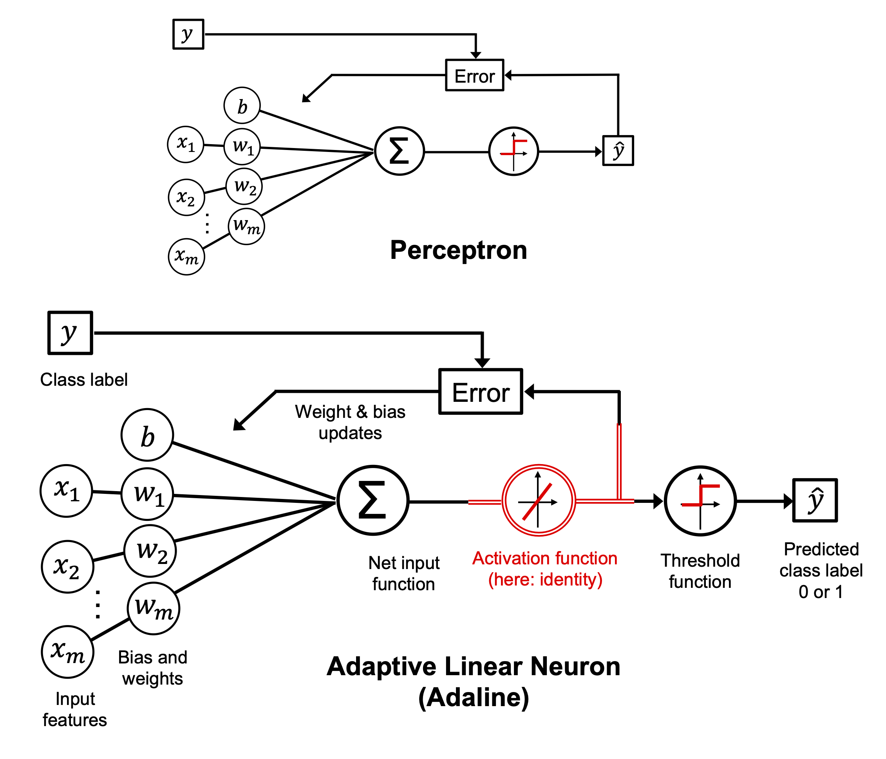

Adapted from Machine Learning with PyTorch and Scikit-Learn by Raschka et al.
Figures and selected functions used under CC BY-NC 4.0.
Markdown content and examples modified for educational use in neuroscience.
6. Training Simple Machine Learning Algorithms for Classification#
Chapter 2/3 — Adapted for SNEU20007U Computational Neuroscience
This notebook contains interactive widgets.
To run it live in your browser, click the badge below:

This chapter covers two key linear classifiers:
The Perceptron, a spiking-neuron-inspired binary classifier
Adaline, which improves on it using gradient descent
We’ll learn to apply these algorithms to classify synthetic neuron waveforms, and understand the role of:
Thresholds and activation functions
Weight updates
Loss functions and convergence
Feature standardization
Online learning (SGD)
…
7. Artificial Neurons – A Brief Glimpse into the Early History of Machine Learning#
Before diving into perceptrons and modern learning algorithms, it’s worth appreciating their historical roots in neuroscience and logic.

In 1943, Warren McCulloch and Walter Pitts published a seminal paper where they proposed a simple binary model of a neuron: the McCulloch-Pitts (MCP) neuron. This artificial neuron would integrate multiple binary inputs, apply a threshold function, and produce a binary output — a simplified version of the “all-or-none” spiking behavior of biological neurons.
The MCP model was essentially a logic gate dressed as a neuron, but it laid the mathematical foundation for neural networks.
A few years later, Frank Rosenblatt introduced the Perceptron — the first trainable artificial neuron. Inspired by the MCP model, Rosenblatt added a learning rule that could adjust the weights of inputs based on classification errors. This made the perceptron capable of learning from labeled data — effectively initiating the field of supervised machine learning.
The perceptron decision rule is simple:
Take a linear combination of inputs and weights.
Add a bias term.
Pass the result through a unit step function to decide if the output should be 1 (fires) or 0 (doesn’t fire).
This is, in spirit, not far from how a real neuron sums postsynaptic potentials and generates an action potential once a certain threshold is crossed.
Why should we care?
Because this is one of the first times a biologically inspired idea directly shaped the birth of machine learning. And while today’s models are far more complex, their conceptual ancestry is rooted in this simple neuron.
…
8. The Perceptron: A Spiking-Inspired Linear Classifier#
Inspired by the early work of McCulloch and Pitts, the perceptron is one of the simplest models of a neuron. It receives multiple inputs, computes a weighted sum, adds a bias, and emits an output — a binary spike — based on a threshold.
Mathematical formulation:
Where:
\(\mathbf{x}\): the input feature vector (e.g., spike width, amplitude, symmetry)
\(\mathbf{w}\): the weight vector, learned from data
\(b\): the bias term, which shifts the decision boundary
\(z\): the net input, i.e., the total signal received by the neuron
The perceptron decides to “fire” (output 1) or remain silent (output 0) based on whether this total input \(z\) crosses the threshold (which is zero, after absorbing it into the bias).
In a neuroscience context, you can think of:
Each input \(x_j\) as the presence or strength of a synaptic input
Each weight \(w_j\) as a synaptic strength
The bias as an intrinsic excitability offset
The output as the neuron’s spiking decision
This makes the perceptron a rough abstraction of how a neuron integrates synaptic input to make a binary decision.

…
9. The Perceptron Learning Rule#
Weight updates are made only when a prediction is wrong, according to this simple rule:
Where:
\(\eta\) is the learning rate
\(x_j^{(i)}\) is the \(j\)-th feature of the \(i\)-th sample
\(y^{(i)}\) is the true label
\(\hat{y}^{(i)}\) is the predicted label (either 0 or 1)

In plain language:
If the perceptron makes a mistake, it nudges the weights in a direction that would have produced the correct output.
This rule keeps adjusting the model to move the decision boundary — the line (or hyperplane) that separates one class from the other — in a way that improves classification over time.
9.1. Linear Separability#
The perceptron algorithm converges only if the data is linearly separable.
What does that mean?
A dataset is linearly separable if we can draw a single straight line (or plane in higher dimensions) that perfectly separates all examples of one class from all examples of another.
Imagine plotting two types of neurons in a 2D space using their spike width and amplitude.
If you can draw a line such that all pyramidal cells are on one side and all interneurons are on the other, the data is linearly separable.
If the classes are not linearly separable — for example, if they overlap or form concentric patterns — the perceptron will never converge, and it will keep oscillating weight updates forever.

This is a major limitation of the basic perceptron model.
Later algorithms (like Adaline, logistic regression, and support vector machines) address this limitation by using soft boundaries, nonlinear transformations, or optimization-based loss functions.
…
10. Perceptron in Code#
We define a Perceptron class with fit() and predict() methods, just like scikit-learn estimators.
We’ll train it on our binary neuron classification problem using synthetic spike waveform features.
import numpy as np
class Perceptron:
"""Perceptron classifier.
Parameters
------------
eta : float
Learning rate (between 0.0 and 1.0)
n_iter : int
Passes over the training dataset.
random_state : int
Random number generator seed for random weight
initialization.
Attributes
-----------
w_ : 1d-array
Weights after fitting.
b_ : Scalar
Bias unit after fitting.
errors_ : list
Number of misclassifications (updates) in each epoch.
"""
def __init__(self, eta=0.01, n_iter=50, random_state=1):
self.eta = eta
self.n_iter = n_iter
self.random_state = random_state
def fit(self, X, y):
"""Fit training data.
Parameters
----------
X : {array-like}, shape = [n_examples, n_features]
Training vectors, where n_examples is the number of examples and
n_features is the number of features.
y : array-like, shape = [n_examples]
Target values.
Returns
-------
self : object
"""
rgen = np.random.RandomState(self.random_state)
self.w_ = rgen.normal(loc=0.0, scale=0.01, size=X.shape[1])
self.b_ = np.float64(0.)
self.errors_ = []
for _ in range(self.n_iter):
errors = 0
for xi, target in zip(X, y):
update = self.eta * (target - self.predict(xi))
self.w_ += update * xi
self.b_ += update
errors += int(update != 0.0)
self.errors_.append(errors)
return self
def net_input(self, X):
"""Calculate net input"""
return np.dot(X, self.w_) + self.b_
def predict(self, X):
"""Return class label after unit step"""
return np.where(self.net_input(X) >= 0.0, 1, 0)
v1 = np.array([1, 2, 3])
v2 = 0.5 * v1
np.arccos(v1.dot(v2) / (np.linalg.norm(v1) * np.linalg.norm(v2)))
0.0
from ch02_expanded import load_synthetic_neuron
# Use the function and adapt downstream code
X, y, df = load_synthetic_neuron(as_frame=True)
# Match old Iris-style pipeline
y = np.where(df['neuron_type'] == 'Interneuron', 0, 1)
X_plot = df[['spike_width', 'amplitude']].values
# dataset features: spike_width, amplitude, upstroke_downstroke, symmetry_index
# Plot
import matplotlib.pyplot as plt
import seaborn as sns
plt.figure(figsize=(5,4))
plt.scatter(X_plot[y == 0, 0], X_plot[y == 0, 1],
color='red', marker='o', label='Interneuron')
plt.scatter(X_plot[y == 1, 0], X_plot[y == 1, 1],
color='blue', marker='s', label='Pyramidal')
plt.xlabel('Spike Width [ms]')
plt.ylabel('Amplitude [µV]')
plt.legend(loc='upper left')
sns.despine()
plt.show()
# Select only the 2 features for training AND plotting
X_plot = df[['spike_width', 'amplitude']].values
y = np.where(df['neuron_type'] == 'Interneuron', 0, 1)
# Train on 2D data
ppn = Perceptron(eta=0.1, n_iter=10) #FIXME what n_iter is required for the Percepton to converge?
ppn.fit(X_plot, y)
plt.figure(figsize=(5,2))
plt.plot(range(1, len(ppn.errors_) + 1), ppn.errors_, marker='o')
plt.xlabel('Epochs')
plt.ylabel('Number of updates')
sns.despine()
# plt.savefig('images/02_07.png', dpi=300)
plt.show()
from matplotlib.colors import ListedColormap
def plot_decision_regions(X, y, classifier, resolution=0.02):
# setup marker generator and color map
markers = ('o', 's', '^', 'v', '<')
colors = ('red', 'blue', 'lightgreen', 'gray', 'cyan')
cmap = ListedColormap(colors[:len(np.unique(y))])
# plot the decision surface
x1_min, x1_max = X[:, 0].min() - 1, X[:, 0].max() + 1
x2_min, x2_max = X[:, 1].min() - 1, X[:, 1].max() + 1
xx1, xx2 = np.meshgrid(np.arange(x1_min, x1_max, resolution),
np.arange(x2_min, x2_max, resolution))
lab = classifier.predict(np.array([xx1.ravel(), xx2.ravel()]).T)
lab = lab.reshape(xx1.shape)
# plt.figure(figsize=(5, 4))
plt.contourf(xx1, xx2, lab, alpha=0.3, cmap=cmap)
plt.xlim(xx1.min(), xx1.max())
plt.ylim(xx2.min(), xx2.max())
# plot class examples
for idx, cl in enumerate(np.unique(y)):
plt.scatter(x=X[y == cl, 0],
y=X[y == cl, 1],
alpha=0.8,
c=colors[idx],
marker=markers[idx],
label=f'Class {cl}',
edgecolor='black')
# Then plot
plot_decision_regions(X_plot, y, classifier=ppn)
plt.xlabel('Spike Width [ms]')
plt.ylabel('Amplitude [µV]')
plt.legend(loc='upper left')
#plt.savefig('images/02_08.png', dpi=300)
plt.show()
---------------------------------------------------------------------------
ValueError Traceback (most recent call last)
Cell In[6], line 2
1 # Then plot
----> 2 plot_decision_regions(X_plot, y, classifier=ppn)
3 plt.xlabel('Spike Width [ms]')
4 plt.ylabel('Amplitude [µV]')
Cell In[5], line 18, in plot_decision_regions(X, y, classifier, resolution)
16 lab = lab.reshape(xx1.shape)
17 # plt.figure(figsize=(5, 4))
---> 18 plt.contourf(xx1, xx2, lab, alpha=0.3, cmap=cmap)
19 plt.xlim(xx1.min(), xx1.max())
20 plt.ylim(xx2.min(), xx2.max())
File /opt/anaconda3/lib/python3.11/site-packages/matplotlib/pyplot.py:2938, in contourf(data, *args, **kwargs)
2936 @_copy_docstring_and_deprecators(Axes.contourf)
2937 def contourf(*args, data=None, **kwargs) -> QuadContourSet:
-> 2938 __ret = gca().contourf(
2939 *args, **({"data": data} if data is not None else {}), **kwargs
2940 )
2941 if __ret._A is not None: # type: ignore[attr-defined]
2942 sci(__ret)
File /opt/anaconda3/lib/python3.11/site-packages/matplotlib/__init__.py:1465, in _preprocess_data.<locals>.inner(ax, data, *args, **kwargs)
1462 @functools.wraps(func)
1463 def inner(ax, *args, data=None, **kwargs):
1464 if data is None:
-> 1465 return func(ax, *map(sanitize_sequence, args), **kwargs)
1467 bound = new_sig.bind(ax, *args, **kwargs)
1468 auto_label = (bound.arguments.get(label_namer)
1469 or bound.kwargs.get(label_namer))
File /opt/anaconda3/lib/python3.11/site-packages/matplotlib/axes/_axes.py:6528, in Axes.contourf(self, *args, **kwargs)
6519 """
6520 Plot filled contours.
6521
(...)
6525 %(contour_doc)s
6526 """
6527 kwargs['filled'] = True
-> 6528 contours = mcontour.QuadContourSet(self, *args, **kwargs)
6529 self._request_autoscale_view()
6530 return contours
File /opt/anaconda3/lib/python3.11/site-packages/matplotlib/contour.py:887, in ContourSet.__init__(self, ax, levels, filled, linewidths, linestyles, hatches, alpha, origin, extent, cmap, colors, norm, vmin, vmax, extend, antialiased, nchunk, locator, transform, negative_linestyles, clip_path, *args, **kwargs)
884 self.labelTexts = []
885 self.labelCValues = []
--> 887 self.set_cmap(cmap)
888 if norm is not None:
889 self.set_norm(norm)
File /opt/anaconda3/lib/python3.11/site-packages/matplotlib/cm.py:602, in ScalarMappable.set_cmap(self, cmap)
600 self.cmap = _ensure_cmap(cmap)
601 if not in_init:
--> 602 self.changed()
File /opt/anaconda3/lib/python3.11/site-packages/matplotlib/contour.py:1145, in ContourSet.changed(self)
1143 def changed(self):
1144 if not hasattr(self, "cvalues"):
-> 1145 self._process_colors() # Sets cvalues.
1146 # Force an autoscale immediately because self.to_rgba() calls
1147 # autoscale_None() internally with the data passed to it,
1148 # so if vmin/vmax are not set yet, this would override them with
1149 # content from *cvalues* rather than levels like we want
1150 self.norm.autoscale_None(self.levels)
File /opt/anaconda3/lib/python3.11/site-packages/matplotlib/contour.py:1302, in ContourSet._process_colors(self)
1300 else:
1301 self.cvalues = self.layers
-> 1302 self.norm.autoscale_None(self.levels)
1303 self.set_array(self.cvalues)
1304 self.update_scalarmappable()
File /opt/anaconda3/lib/python3.11/site-packages/matplotlib/colors.py:1408, in Normalize.autoscale_None(self, A)
1405 A = A.data
1407 if self.vmin is None and A.size:
-> 1408 self.vmin = A.min()
1409 if self.vmax is None and A.size:
1410 self.vmax = A.max()
File /opt/anaconda3/lib/python3.11/site-packages/matplotlib/colors.py:1264, in Normalize.vmin(self, value)
1262 if value != self._vmin:
1263 self._vmin = value
-> 1264 self._changed()
File /opt/anaconda3/lib/python3.11/site-packages/matplotlib/colors.py:1292, in Normalize._changed(self)
1287 def _changed(self):
1288 """
1289 Call this whenever the norm is changed to notify all the
1290 callback listeners to the 'changed' signal.
1291 """
-> 1292 self.callbacks.process('changed')
File /opt/anaconda3/lib/python3.11/site-packages/matplotlib/cbook.py:303, in CallbackRegistry.process(self, s, *args, **kwargs)
301 except Exception as exc:
302 if self.exception_handler is not None:
--> 303 self.exception_handler(exc)
304 else:
305 raise
File /opt/anaconda3/lib/python3.11/site-packages/matplotlib/cbook.py:87, in _exception_printer(exc)
85 def _exception_printer(exc):
86 if _get_running_interactive_framework() in ["headless", None]:
---> 87 raise exc
88 else:
89 traceback.print_exc()
File /opt/anaconda3/lib/python3.11/site-packages/matplotlib/cbook.py:298, in CallbackRegistry.process(self, s, *args, **kwargs)
296 if func is not None:
297 try:
--> 298 func(*args, **kwargs)
299 # this does not capture KeyboardInterrupt, SystemExit,
300 # and GeneratorExit
301 except Exception as exc:
File /opt/anaconda3/lib/python3.11/site-packages/matplotlib/contour.py:1150, in ContourSet.changed(self)
1145 self._process_colors() # Sets cvalues.
1146 # Force an autoscale immediately because self.to_rgba() calls
1147 # autoscale_None() internally with the data passed to it,
1148 # so if vmin/vmax are not set yet, this would override them with
1149 # content from *cvalues* rather than levels like we want
-> 1150 self.norm.autoscale_None(self.levels)
1151 self.set_array(self.cvalues)
1152 self.update_scalarmappable()
File /opt/anaconda3/lib/python3.11/site-packages/matplotlib/colors.py:1410, in Normalize.autoscale_None(self, A)
1408 self.vmin = A.min()
1409 if self.vmax is None and A.size:
-> 1410 self.vmax = A.max()
File /opt/anaconda3/lib/python3.11/site-packages/matplotlib/colors.py:1275, in Normalize.vmax(self, value)
1273 if value != self._vmax:
1274 self._vmax = value
-> 1275 self._changed()
File /opt/anaconda3/lib/python3.11/site-packages/matplotlib/colors.py:1292, in Normalize._changed(self)
1287 def _changed(self):
1288 """
1289 Call this whenever the norm is changed to notify all the
1290 callback listeners to the 'changed' signal.
1291 """
-> 1292 self.callbacks.process('changed')
File /opt/anaconda3/lib/python3.11/site-packages/matplotlib/cbook.py:303, in CallbackRegistry.process(self, s, *args, **kwargs)
301 except Exception as exc:
302 if self.exception_handler is not None:
--> 303 self.exception_handler(exc)
304 else:
305 raise
File /opt/anaconda3/lib/python3.11/site-packages/matplotlib/cbook.py:87, in _exception_printer(exc)
85 def _exception_printer(exc):
86 if _get_running_interactive_framework() in ["headless", None]:
---> 87 raise exc
88 else:
89 traceback.print_exc()
File /opt/anaconda3/lib/python3.11/site-packages/matplotlib/cbook.py:298, in CallbackRegistry.process(self, s, *args, **kwargs)
296 if func is not None:
297 try:
--> 298 func(*args, **kwargs)
299 # this does not capture KeyboardInterrupt, SystemExit,
300 # and GeneratorExit
301 except Exception as exc:
File /opt/anaconda3/lib/python3.11/site-packages/matplotlib/contour.py:1152, in ContourSet.changed(self)
1150 self.norm.autoscale_None(self.levels)
1151 self.set_array(self.cvalues)
-> 1152 self.update_scalarmappable()
1153 alphas = np.broadcast_to(self.get_alpha(), len(self.cvalues))
1154 for label, cv, alpha in zip(self.labelTexts, self.labelCValues, alphas):
File /opt/anaconda3/lib/python3.11/site-packages/matplotlib/collections.py:920, in Collection.update_scalarmappable(self)
918 # pcolormesh, scatter, maybe others flatten their _A
919 self._alpha = self._alpha.reshape(self._A.shape)
--> 920 self._mapped_colors = self.to_rgba(self._A, self._alpha)
922 if self._face_is_mapped:
923 self._facecolors = self._mapped_colors
File /opt/anaconda3/lib/python3.11/site-packages/matplotlib/cm.py:509, in ScalarMappable.to_rgba(self, x, alpha, bytes, norm)
507 if norm:
508 x = self.norm(x)
--> 509 rgba = self.cmap(x, alpha=alpha, bytes=bytes)
510 return rgba
File /opt/anaconda3/lib/python3.11/site-packages/matplotlib/colors.py:725, in Colormap.__call__(self, X, alpha, bytes)
702 r"""
703 Parameters
704 ----------
(...)
722 RGBA values with a shape of ``X.shape + (4, )``.
723 """
724 if not self._isinit:
--> 725 self._init()
727 xa = np.array(X, copy=True)
728 if not xa.dtype.isnative:
729 # Native byteorder is faster.
File /opt/anaconda3/lib/python3.11/site-packages/matplotlib/colors.py:1175, in ListedColormap._init(self)
1173 def _init(self):
1174 self._lut = np.zeros((self.N + 3, 4), float)
-> 1175 self._lut[:-3] = to_rgba_array(self.colors)
1176 self._isinit = True
1177 self._set_extremes()
File /opt/anaconda3/lib/python3.11/site-packages/matplotlib/colors.py:489, in to_rgba_array(c, alpha)
487 raise e
488 if isinstance(c, str):
--> 489 raise ValueError(f"{c!r} is not a valid color value.")
491 if len(c) == 0:
492 return np.zeros((0, 4), float)
ValueError: 'red' is not a valid color value.

…
11. Adaline: Adaptive Linear Neuron#
While the perceptron was an important milestone in the early days of neural networks, it had a key limitation:
it only updates its weights based on discrete classification outcomes (0 or 1). That’s where Adaline comes in — a slightly more sophisticated model introduced by Widrow and Hoff in 1960.
Adaline — short for ADAptive LInear NEuron — differs from the perceptron in a subtle but powerful way:
Instead of using the final predicted class for weight updates (as the perceptron does),
Adaline uses the raw continuous output of the neuron (the net input, a.k.a. activation), before thresholding.
This subtle change means the model minimizes a differentiable loss function, the Mean Squared Error (MSE):
Where:
\(y^{(i)}\) is the true class label (0 or 1)
\(z^{(i)}\) is the continuous-valued net input (before applying the step function)
\(n\) is the number of training examples

11.1. Why does this matter?#
Because differentiable loss functions are the key to modern machine learning.
This allows Adaline to use gradient descent to update its weights:
Where \(\eta\) is the learning rate, and the gradient tells us how the error changes with respect to each weight.

This makes Adaline a kind of gateway drug to deeper neural networks and algorithms like logistic regression or backpropagation.
11.2. Conceptual Summary#
Perceptron: Makes weight updates based on predicted class errors (non-differentiable)
Adaline: Makes updates based on the real-valued activation output → differentiable MSE loss
Both models ultimately produce binary predictions, but Adaline trains in a smoother, more principled way — which improves stability, especially when the data isn’t perfectly linearly separable.
class AdalineGD:
"""ADAptive LInear NEuron classifier.
Parameters
------------
eta : float
Learning rate (between 0.0 and 1.0)
n_iter : int
Passes over the training dataset.
random_state : int
Random number generator seed for random weight
initialization.
Attributes
-----------
w_ : 1d-array
Weights after fitting.
b_ : Scalar
Bias unit after fitting.
losses_ : list
Mean squared eror loss function values in each epoch.
"""
def __init__(self, eta=0.01, n_iter=50, random_state=1):
self.eta = eta
self.n_iter = n_iter
self.random_state = random_state
def fit(self, X, y):
""" Fit training data.
Parameters
----------
X : {array-like}, shape = [n_examples, n_features]
Training vectors, where n_examples is the number of examples and
n_features is the number of features.
y : array-like, shape = [n_examples]
Target values.
Returns
-------
self : object
"""
rgen = np.random.RandomState(self.random_state)
self.w_ = rgen.normal(loc=0.0, scale=0.01, size=X.shape[1])
self.b_ = np.float64(0.)
self.losses_ = []
for i in range(self.n_iter):
net_input = self.net_input(X)
# Please note that the "activation" method has no effect
# in the code since it is simply an identity function. We
# could write `output = self.net_input(X)` directly instead.
# The purpose of the activation is more conceptual, i.e.,
# in the case of logistic regression (as we will see later),
# we could change it to
# a sigmoid function to implement a logistic regression classifier.
output = self.activation(net_input)
errors = (y - output)
#for w_j in range(self.w_.shape[0]):
# self.w_[w_j] += self.eta * (2.0 * (X[:, w_j]*errors)).mean()
self.w_ += self.eta * 2.0 * X.T.dot(errors) / X.shape[0]
self.b_ += self.eta * 2.0 * errors.mean()
loss = (errors**2).mean()
self.losses_.append(loss)
return self
def net_input(self, X):
"""Calculate net input"""
return np.dot(X, self.w_) + self.b_
def activation(self, X):
"""Compute linear activation"""
return X
def predict(self, X):
"""Return class label after unit step"""
return np.where(self.activation(self.net_input(X)) >= 0.5, 1, 0)
# Reload the sy
X, y, df = load_synthetic_neuron(as_frame=True)
X_plot = df[['spike_width', 'amplitude']].values
y = np.where(df['neuron_type'] == 'Interneuron', 0, 1)
11.3. Training Dynamics#
Adaline’s loss surface is convex, which means:
Gradient descent can reliably find the global minimum
The algorithm will converge, as long as the learning rate isn’t too high

# Train and visualize
fig, ax = plt.subplots(nrows=1, ncols=2, figsize=(10, 4))
ada1 = AdalineGD(n_iter=15, eta=0.1).fit(X_plot, y)
ax[0].plot(range(1, len(ada1.losses_) + 1), np.log10(ada1.losses_), marker='o')
ax[0].set_xlabel('Epochs')
ax[0].set_ylabel('log(Mean squared error)')
ax[0].set_title('Adaline - Learning rate 0.1')
ada2 = AdalineGD(n_iter=15, eta=0.0001).fit(X_plot, y)
ax[1].plot(range(1, len(ada2.losses_) + 1), ada2.losses_, marker='o')
ax[1].set_xlabel('Epochs')
ax[1].set_ylabel('Mean squared error')
ax[1].set_title('Adaline - Learning rate 0.0001')
plt.tight_layout()
sns.despine()
plt.show()
plt.figure(figsize=(5, 4))
plot_decision_regions(X_plot, y, classifier=ppn) # Perceptron
plt.title('Perceptron')
plt.figure(figsize=(5, 4))
plot_decision_regions(X_plot, y, classifier=ada1) # Adaline (with eta=0.1)
plt.title('Adaline (with eta=0.1)')
plt.figure(figsize=(5, 4))
plot_decision_regions(X_plot, y, classifier=ada2) # Adaline (with eta=0.0001)
plt.title('Adaline (with eta=0.0001)')
import matplotlib.pyplot as plt
from ipywidgets import interact, FloatLogSlider, IntSlider
# Interactive Adaline training plot for exploration
def interactive_adaline(eta, epochs):
model = AdalineGD(eta=eta, n_iter=epochs).fit(X_plot, y)
plt.figure(figsize=(5, 4))
plt.plot(range(1, len(model.losses_) + 1), model.losses_, marker='o')
plt.xlabel('Epochs')
plt.ylabel('Mean Squared Error')
plt.title(f'Adaline: eta={eta}, epochs={epochs}')
plt.grid(True)
plt.tight_layout()
plt.show()
# Create the widget
interact(interactive_adaline,
eta=FloatLogSlider(base=10, value=0.01, min=-5, max=-1, step=0.1, description='Learning Rate'),
epochs=IntSlider(value=15, min=2, max=50, step=1, description='Epochs'))
12. Improving Gradient Descent Through Feature Scaling#
Gradient descent is a powerful optimization algorithm, but it’s also quite sensitive to the scale of the input features. When features have very different scales — for example, spike_width in milliseconds vs. amplitude in microvolts — the optimizer may zigzag inefficiently, slowing convergence or even diverging entirely.
To mitigate this, we apply a preprocessing step called standardization:
Here, each feature is centered around zero and scaled to have unit variance. This helps gradient descent take uniform steps across all dimensions, leading to faster and more stable convergence.

In practice, scaling can make the difference between a model that learns in 10 epochs vs. one that never converges at all.
We’ll now apply standardization to our synthetic neuron dataset and observe how it improves Adaline’s training behavior.
# Reload the sy
X, y, df = load_synthetic_neuron(as_frame=True)
X_plot = df[['spike_width', 'amplitude']].values
y = np.where(df['neuron_type'] == 'Interneuron', 0, 1)
# standardize features
X_std = np.copy(X_plot)
X_std[:, 0] = (X_plot[:, 0] - X_plot[:, 0].mean()) / X_plot[:, 0].std()
X_std[:, 1] = (X_plot[:, 1] - X_plot[:, 1].mean()) / X_plot[:, 1].std()
ada_gd = AdalineGD(n_iter=20, eta=0.5)
ada_gd.fit(X_std, y)
plot_decision_regions(X_std, y, classifier=ada_gd)
plt.title('Adaline - Gradient descent')
plt.xlabel('Sepal length [standardized]')
plt.ylabel('Petal length [standardized]')
plt.legend(loc='upper left')
plt.tight_layout()
#plt.savefig('images/02_14_1.png', dpi=300)
plt.show()
plt.figure(figsize=(5, 4))
plt.plot(range(1, len(ada_gd.losses_) + 1), ada_gd.losses_, marker='o')
plt.xlabel('Epochs')
plt.ylabel('Mean squared error')
plt.tight_layout()
sns.despine()
#plt.savefig('images/02_14_2.png', dpi=300)
plt.show()
13. Stochastic Gradient Descent (SGD)#
While batch gradient descent updates the weights only after processing the entire training set, Stochastic Gradient Descent (SGD) takes a different, more dynamic approach.
SGD updates the model parameters after each individual training example, which leads to:
Faster convergence, especially in large datasets
More frequent updates, allowing the model to respond quickly
Online learning, where the model can learn continuously from new data as it arrives
13.1. Why use SGD?#
In practice, re-evaluating the entire training dataset every time (as done in batch gradient descent) becomes computationally expensive — especially when working with large-scale data, like high-throughput brain recordings.
SGD solves this by approximating the gradient using just one example at a time:
While this introduces some “noise” in the optimization (the loss function fluctuates more), it can help the algorithm escape shallow local minima — a desirable property when optimizing nonlinear models.
13.2. Practical Notes#
Shuffling the training data between epochs is essential to avoid cycles.
Adaptive learning rates (which decrease over time) can help the model converge more smoothly.
Mini-batch gradient descent (training on small batches of examples) is often used as a middle ground.
In neuroscience terms, you can think of SGD as a synaptic update that happens right after each “spike” of training data — a much more biologically plausible mechanism than batch processing the entire brain!
class AdalineSGD:
"""ADAptive LInear NEuron classifier.
Parameters
------------
eta : float
Learning rate (between 0.0 and 1.0)
n_iter : int
Passes over the training dataset.
shuffle : bool (default: True)
Shuffles training data every epoch if True to prevent cycles.
random_state : int
Random number generator seed for random weight
initialization.
Attributes
-----------
w_ : 1d-array
Weights after fitting.
b_ : Scalar
Bias unit after fitting.
losses_ : list
Mean squared error loss function value averaged over all
training examples in each epoch.
"""
def __init__(self, eta=0.01, n_iter=10, shuffle=True, random_state=None):
self.eta = eta
self.n_iter = n_iter
self.w_initialized = False
self.shuffle = shuffle
self.random_state = random_state
def fit(self, X, y):
""" Fit training data.
Parameters
----------
X : {array-like}, shape = [n_examples, n_features]
Training vectors, where n_examples is the number of examples and
n_features is the number of features.
y : array-like, shape = [n_examples]
Target values.
Returns
-------
self : object
"""
self._initialize_weights(X.shape[1])
self.losses_ = []
for i in range(self.n_iter):
if self.shuffle:
X, y = self._shuffle(X, y)
losses = []
for xi, target in zip(X, y):
losses.append(self._update_weights(xi, target))
avg_loss = np.mean(losses)
self.losses_.append(avg_loss)
return self
def partial_fit(self, X, y):
"""Fit training data without reinitializing the weights"""
if not self.w_initialized:
self._initialize_weights(X.shape[1])
if y.ravel().shape[0] > 1:
for xi, target in zip(X, y):
self._update_weights(xi, target)
else:
self._update_weights(X, y)
return self
def _shuffle(self, X, y):
"""Shuffle training data"""
r = self.rgen.permutation(len(y))
return X[r], y[r]
def _initialize_weights(self, m):
"""Initialize weights to small random numbers"""
self.rgen = np.random.RandomState(self.random_state)
self.w_ = self.rgen.normal(loc=0.0, scale=0.01, size=m)
self.b_ = np.float64(0.)
self.w_initialized = True
def _update_weights(self, xi, target):
"""Apply Adaline learning rule to update the weights"""
output = self.activation(self.net_input(xi))
error = (target - output)
self.w_ += self.eta * 2.0 * xi * (error)
self.b_ += self.eta * 2.0 * error
loss = error**2
return loss
def net_input(self, X):
"""Calculate net input"""
return np.dot(X, self.w_) + self.b_
def activation(self, X):
"""Compute linear activation"""
return X
def predict(self, X):
"""Return class label after unit step"""
return np.where(self.activation(self.net_input(X)) >= 0.5, 1, 0)
ada_sgd = AdalineSGD(n_iter=15, eta=0.01, random_state=1)
ada_sgd.fit(X_std, y)
plot_decision_regions(X_std, y, classifier=ada_sgd)
plt.title('Adaline - Stochastic gradient descent')
plt.xlabel('Sepal length [standardized]')
plt.ylabel('Petal length [standardized]')
plt.legend(loc='upper left')
plt.tight_layout()
plt.savefig('figures/02_15_1.png', dpi=300)
plt.show()
plt.plot(range(1, len(ada_sgd.losses_) + 1), ada_sgd.losses_, marker='o')
plt.xlabel('Epochs')
plt.ylabel('Average loss')
plt.savefig('figures/02_15_2.png', dpi=300)
plt.show()
import matplotlib.pyplot as plt
from ipywidgets import interact, FloatLogSlider, IntSlider, Dropdown
# Reload the sy
X, y, df = load_synthetic_neuron(as_frame=True)
X_plot = df[['spike_width', 'amplitude']].values
y = np.where(df['neuron_type'] == 'Interneuron', 0, 1)
# Standardize data
X_std = (X_plot - X_plot.mean(axis=0)) / X_plot.std(axis=0)
# Comparison widget for batch vs stochastic gradient descent
def compare_gd_vs_sgd(eta, epochs, optimizer_type):
if optimizer_type == 'Batch GD':
model = AdalineGD(eta=eta, n_iter=epochs).fit(X_std, y)
label = 'Batch Gradient Descent'
else:
model = AdalineSGD(eta=eta, n_iter=epochs, random_state=1).fit(X_std, y)
label = 'Stochastic Gradient Descent'
fig, axs = plt.subplots(1, 2, figsize=(12, 4))
plt.sca(axs[0])
plot_decision_regions(X_std, y, classifier=model)
axs[0].set_xlabel('Spike Width [standardized]')
axs[0].set_ylabel('Amplitude [standardized]')
axs[0].set_title(label)
axs[0].legend(loc='upper left')
axs[1].plot(range(1, len(model.losses_) + 1), model.losses_, marker='o')
axs[1].set_xlabel('Epochs')
axs[1].set_ylabel('Loss')
axs[1].set_title('Loss Curve')
plt.tight_layout()
plt.show()
# Interactive widget
interact(compare_gd_vs_sgd,
eta=FloatLogSlider(base=10, value=0.01, min=-5, max=1, step=0.1, description='Learning Rate'),
epochs=IntSlider(value=15, min=3, max=50, step=1, description='Epochs'),
optimizer_type=Dropdown(options=['Batch GD', 'Stochastic GD'], value='Batch GD', description='Optimizer'));
13.3. Explore Gradient Descent Strategies#
Use the interactive widget above to:
Toggle between Batch Gradient Descent and Stochastic Gradient Descent (SGD)
Observe how the decision boundary evolves with each optimizer
Monitor the loss curve over epochs
Explore how different learning rates affect convergence and stability
Try extreme values for the learning rate or change the number of epochs — and see how the optimizer behaves!
…
14. Exercise: Build and Compare a Custom Neuron Classifier#
In this exercise, you will explore how simple linear classifiers behave when trained on different combinations of features from the synthetic neuron dataset.
14.1. Instructions#
Use the synthetic neuron dataset (2-class version).
Choose any two features of your choice (e.g., spike width and symmetry index).
Train both a:
Perceptron model
Adaline model
For Adaline, try two different learning rates (e.g.,
0.01and0.0001) and visualize the loss over epochs.Plot the decision boundaries for both classifiers on a 2D scatter plot.
Write a short reflection:
Which model converged more quickly?
Which produced a smoother decision boundary?
How did learning rate affect the Adaline model’s performance?
14.2. Learning Goals#
Understand how feature choice and learning rate affect model behavior.
Compare Perceptron vs. Adaline learning rules in practice.
Gain confidence interpreting training curves and decision surfaces.
# === Exercise: Build and Compare a Custom Neuron Classifier ===
# 1. Import the synthetic 2-class dataset
# from ch02_expanded import load_synthetic_neuron
# X, y = load_synthetic_neuron(as_frame=False)
# Pick two feature indices you want to use, e.g., 0 and 3
# 2. Select two features only
# X = X[:, [feature_index_1, feature_index_2]]
# 3. Standardize the features
# from sklearn.preprocessing import StandardScaler
# scaler = StandardScaler()
# X_std =
# 4. Train a Perceptron
# from ch02_expanded import Perceptron
# ppn =
# ppn.
# 5. Train two Adaline models with different learning rates
# from ch02_expanded import AdalineGD
# ada1 = AdalineGD(eta=..., n_iter=...).
# ada2 = AdalineGD(eta=..., n_iter=...).
# 6. Plot decision boundaries
# Use the provided plot_decision_regions function from the notebook
# 7. Plot training curves
# plt.plot(ada1.losses_) and plt.plot(ada2.losses_)
# 8. Write a short reflection based on the plots and results